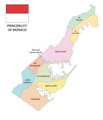
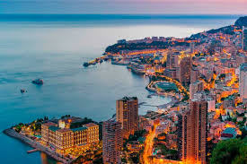
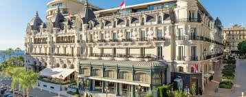
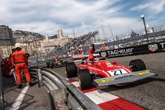

Monaco egy kis ország, amely a Földközi-tenger partján helyezkedik el, és Franciaországgal határos. Ez a városállam híres a luxus életstílusáról, a kaszinóiról és a híres Monte Carlo negyedéről. Monaco egyike a világ legkisebb országainak, de gazdaságilag nagyon erős, főként a turizmus és a pénzügyi szolgáltatások révén. Az országban évente megrendezésre kerülő Forma-1-es Monacói Nagydíj is világszerte ismert esemény. Monaco egyedülálló helyet foglal el a világban, ahol a gazdagság és a luxus találkozik a történelmi és kulturális örökséggel.
Monaco egyike a világ legkisebb országainak, mindössze 2 négyzetkilométer területtel rendelkezik. Ennek ellenére Monaco a világ egyik leggazdagabb országa, ahol a GDP per fő meghaladja a 190 000 dollárt. Monaco híres a kaszinóiról, különösen a Monte Carlo Casino-ról, amely az egyik leghíresebb kaszinó a világon. Az országban évente megrendezésre kerülő Forma-1-es Monacói Nagydíj is világszerte ismert esemény, amely a város utcáin zajlik. Monaco egyedülálló helyet foglal el a világban, ahol a gazdagság és a luxus találkozik a történelmi és kulturális örökséggel.



